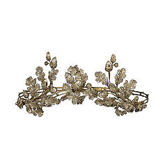

|
|
Department
of Medieval and Modern Europe > galleries
> Room
47
Europe
- the 19th Century
|  |
Europe
- the 19th Century
This gallery contains works from the late
eighteenth to the late nineteenth century. A historical narrative
told with medals sculpted
by the great artists of the day sets in context a wealth of ceramics,
glass, silver and jewellery, arranged to add to the history and
to demonstrate stylistic and technical developments.
Much
nineteenth century design borrows motifs from earlier historical
periods; the central case illustrates how the collections of The
British Museum served as inspiration. As well as direct derivations,
that is, nineteenth-century reproductions of famous ancient objects
in the Museum, the collections exercised a profound influence through
their free accessibility in the largest capital city in the world.
Examined
around this pivotal theme are the passions, discoveries and inventions...more
 floor
map
floor
map
opening
hours
|
|
...that
affected all the arts, from the spread of Neo-Classicism to the
Gothic Revival, from the great international exhibitions made possible
by the development of railways to the opening up of Japan and the
fascination with the East. Traditional virtuoso craftsmanship flourished
alongside the growth of machine technology. Industrialisation was
to be blamed by critics for what they saw as the collapse of taste
and the late nineteenth century produced a number of conscious reform
movements.
The jewellery
in this gallery almost all comes from the generous Gift made to
the British Museum by Professor John and Mrs Anne Hull Grundy in
1978. The importance of the collection lies in its wealth of signed
and documented works by leading European and American gem-engravers,
jewellers and designers.
This gallery
was made possible by a generous gift in honour of Mr and Mrs T.
Y. Chao.
|
|
Spectacular
loans-in
Set of church plate designed by A. W. N.
Pugin: Silver-gilt, enamel,
gem-set monstrance, ciborium, chalice and paten. Designed
by A.W.N.Pugin and made by J.Hardman & Co., Birmingham, 1850.
St.Mary's Catholic Church, Clapham, South London, was built by Pugin's
friend W.W.Wardell. Pugin (1812-52) designed several sets of church
plate for Hardman. This is Pugin's grandest monstrance and cost
£125.
Lent by the Vicar and Churchwardens of St.Mary's, Clapham, London.
Queen
Victoria’s bridesmaids’ brooch:
Gold and turquoise eagle, set with pearls, rubies and diamonds.
Prince Albert gave a similar 'Coburg eagle' brooch to each of the
twelve bridesmaids at his marriage to Queen Victoria in 1840.
Anonymous
loan.
|
More galleries: 41
| 42 | 43 | 44
| 45 | 46 | 47 |
48

|